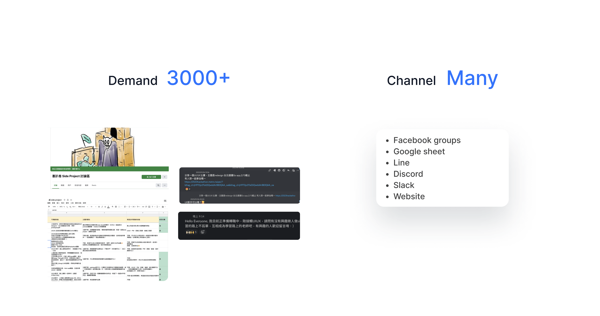

Co-up, choose partners more precisely.
Outline
We usually conduct our side projects by ourselves, but it turns out that we lack feedback and collaboration experience.To delve into this problem, I start inviting other designers and engineers to work together, testing our solution.
Why we start?
From our observation, we found that there is a high demand for side project partners in the market and there are many channels looking for partners.

Although there are many channels, we also found that there are usually few responses to posts.

Moreover, when we did the side project alone, there were always two main problems:
- 1. Lack of opportunity to discuss and receive feedback
- 2. Too subjective and lack of feasibility
Challenge
However, we immediately encountered great difficulties, firstly, we needed to spend time on the research, and secondly, we could not get many samples from the questionnaire instantly.
So how should we do?
Considering the time limit, we decided to develop the MVP website first to test our ideas and learn more about the problems.
Strategy
And then, we thought about strategies to face our challenge. First, we planned to put all the ideas on the MVP website. At the same time, we imported our survey after the CTA button, hoping that this would attract more users to finish the survey for follow-up research. Finally, we posted our website to every channel!
Upload Result
According to our launch results, we received 1096 visits on the day we launched our website. We also received 153 responses to our survey, which exceeded our expectations.
In the survey, we found that 85% of the respondents have less than 5 years of experience, and the most troubling thing for them in the side project is that they are concerned about their lack of experience.

Insight from Interview
In addition, we also interviewed 11 respondents to delve into some questionn. Finally, we got some insights.
Design Decision
Design Solution
First, we started with the wireframe design and confirmed all the user flows.
Secondly, We designed several features to solve the problem.

In addition, we designed a newbie tutorial and ice- breaker, to help users get organized before starting a project. After all, reaching a consensus with partners at first can help communication.
Usability testing
Before developing, we invited a total of 66 testers to help us test the usability of our product. 36 of them completed the test, and we learned about our product from their testing.

Regarding this test, we are now continuously improving and hope to provide users with a more convenient media platform.
What I learned?
Even though the product has not yet been developed, the duration of the project has been extended a lot. I still learned that developing a product from 0 to 1 is a challenging task. Because not only do we need to solve the user's problems, but we also need to control the time planning within the development.
If you enjoy this project, I would love to share more with you! Thanks for stopping by. 😊
All content © 2022-Current Jerrick Liang